Conception¶
Architecture¶
L’application Pique-Me est organisée en trois grandes parties (ou couches), qui travaillent ensemble pour offrir une bonne expérience à l’utilisateur. - L’interface utilisateur (Frontend):
C’est la partie que l’utilisateur voit et utilise. Elle est développée avec React Native et fonctionne sur téléphone (Android/iOS).
L’utilisateur peut :
- chercher un parc,
- filtrer les résultats,
- réserver une place,
- voir ses favoris,
- gérer son compte,...
L’application ne va pas chercher les données toute seule : elle envoie des demandes à un serveur.
- Le serveur (Backend)
Le serveur est un programme développé avec Node.js et Express. C’est lui qui reçoit les demandes de l’utilisateur, les comprend et les traite.
Par exemple :
Si un utilisateur veut réserver un parc, le serveur vérifie si c’est possible.
Si l’utilisateur veut se connecter, le serveur demande à Firebase si le mot de passe est correct.
Le serveur est le cerveau de l’application. Il discute avec les bases de données et les services.
- Les données (Firebase + API de la Ville de Montréal)
Cette partie contient toutes les informations:
Firebase stocke les comptes utilisateurs, les réservations, les favoris, les avis, etc.
L’API des parcs de Montréal fournit des infos officielles sur les équipements, règlements et localisation des parcs.
Le serveur va chercher les données ici et les renvoie à l’application.
-
Fonctionment
-
L’utilisateur clique ou fait une action dans l’application.
- L’application envoie la demande au serveur.
- Le serveur demande les infos à Firebase ou à l’API de Montréal.
- Le serveur renvoie la réponse à l’application.
- L’utilisateur voit les infos s’afficher.
Choix technologiques¶
Utilisation de React Native avec Expo Base de données Firebase Gestion de l’authentification, des réservations, des signalements et des avis en temps réel, sans serveur complexe. API des parcs de Montréal Permet d’afficher dynamiquement la liste des parcs, leurs équipements (BBQ, toilettes, etc.) et leurs règlements. Géolocalisation avec Expo Location Permet à l’utilisateur de trouver les parcs à proximité ou de faire des recherches par adresse. Système de filtres et favoris localement Améliore l’expérience utilisateur avec un accès rapide aux parcs préférés. UI/UX moderne avec composants réutilisables Création d’interfaces agréables, cohérentes et accessibles via une palette de couleurs et des composants réactifs.
Frontend (React Native + Expo)¶
Permet un développement rapide et compatible avec plusieurs plateformes (iOS et Android) avec un environnement simple à configurer.
- UI/UX moderne avec composants réutilisables: Création d’interfaces agréables, cohérentes et accessibles via une palette de couleurs et des composants réactifs.
Backend (Node.js + Express)¶
Permet de créer des routes API REST (ex. : GET /parks, POST /reservations), centraliser la logique (vérifier les disponibilités, gérer les conflits de réservation, etc.). On peut aussi découpler frontend et backend ce qui rend l'application plus propre et réutilisable.
On peut y définir précisément quelles données sont accessibles et transformer les données avant de les envoyer à l’application.
- Base de données Firebase: Gestion de l’authentification, des réservations, des signalements et des avis en temps réel, sans serveur complexe.
- API des parcs de Montréal: Permet d’afficher dynamiquement la liste des parcs, leurs équipements (BBQ, toilettes, etc.) et leurs règlements.
- Géolocalisation avec Expo Location: Permet à l’utilisateur de trouver les parcs à proximité ou de faire des recherches par adresse.
- Système de filtres et favoris localement: Améliore l’expérience utilisateur avec un accès rapide aux parcs préférés.
Modèles et diagrammes¶
Diagramme d'activités (représentation des différents flux d'activités)¶
Inscription et Connexion¶
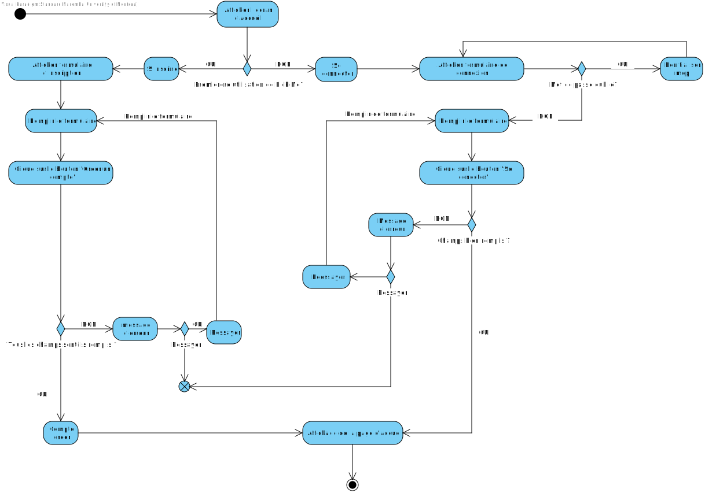
Ce diagramme illustre les étapes principales du flux d’inscription et de connexion de l’utilisateur.
Recherche & Filtrage de parcs¶
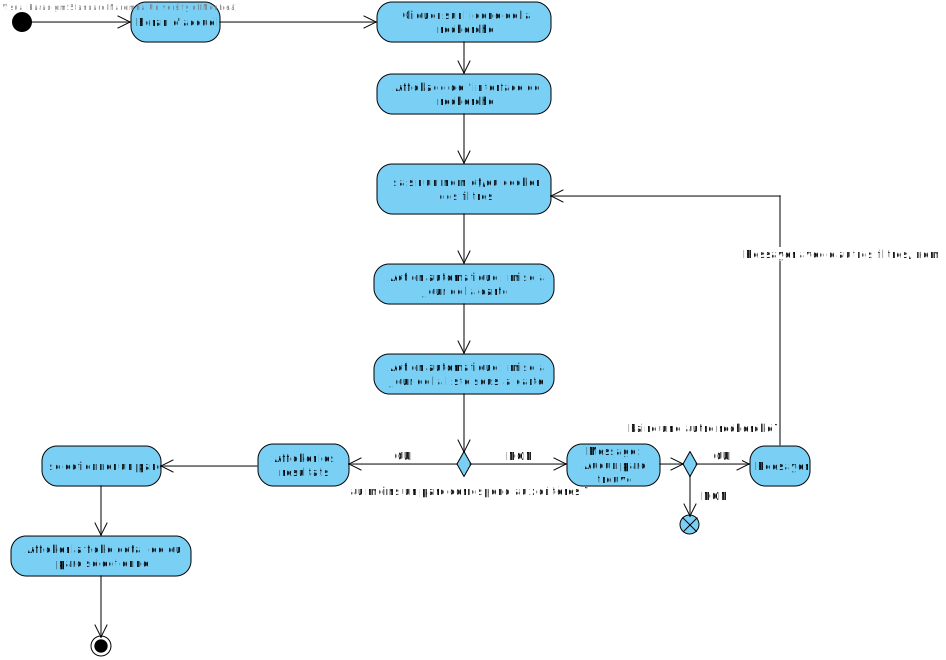
Ce diagramme illustre le processus de recherche et de filtrage des parcs par l’utilisateur.
Réservation d’un emplacement¶
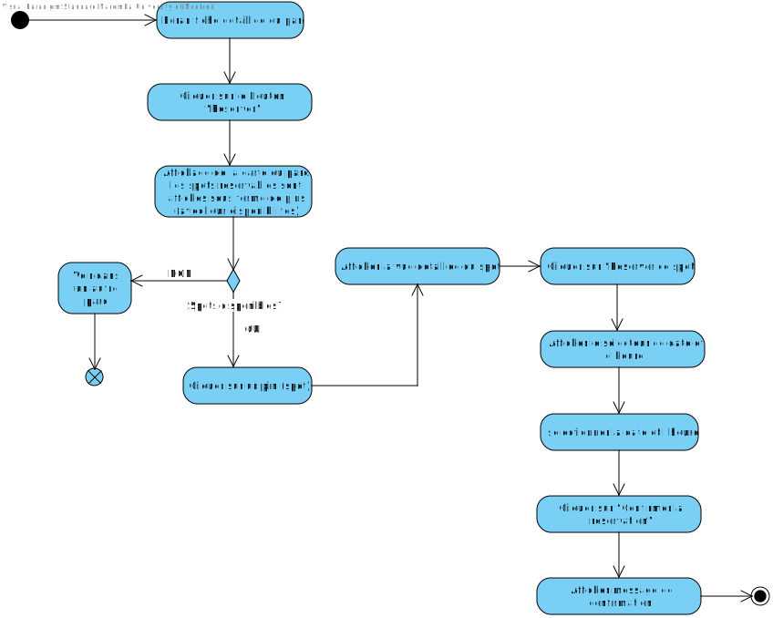
Ce diagramme montre le parcours utilisateur pour choisir un spot sur la carte du parc, sélectionner la date/heure et confirmer la réservation.
Réservation d’une activité¶
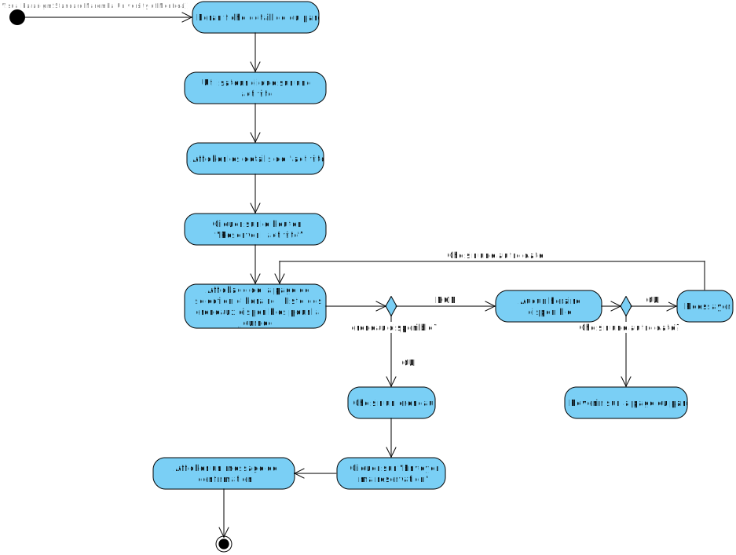
Ce diagramme montre le parcours utilisateur pour sélectionner une activité dans la fiche du parc, choisir un créneau horaire et confirmer la réservation.
Ajout / retrait d’un favori¶
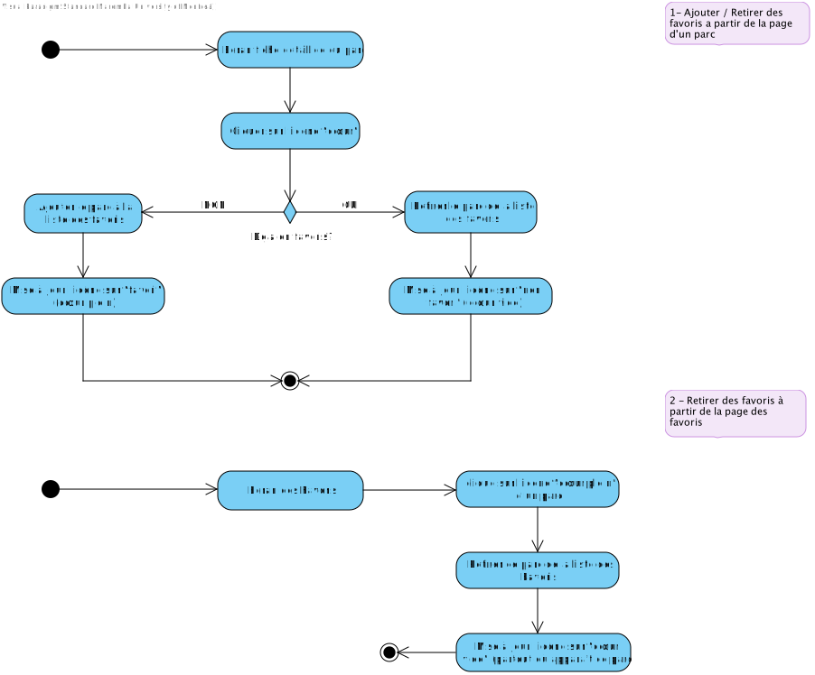
Ce diagramme montre deux cas :
-
Ajouter ou retirer un favori depuis la fiche d’un parc : l’utilisateur clique sur l’icône “cœur”, une décision vérifie si le parc est déjà en favori (pour l’ajouter ou le retirer) et l’icône se met à jour.
-
Retirer un favori depuis la page des favoris : l’utilisateur clique sur le cœur plein d’un parc listé, celui-ci est supprimé des favoris et l’icône passe en cœur vide partout où le parc apparaît.
Ajouter un avis¶
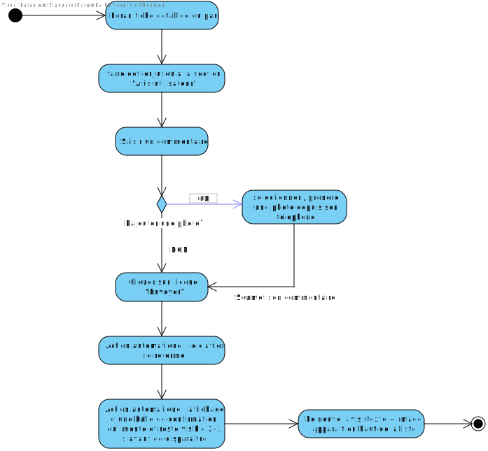
Ce diagramme montre le parcours utilisateur depuis la fiche du spot :
-
L’utilisateur descend jusqu’à la section “Avis utilisateur”.
-
Il saisit un commentaire et peut ajouter une image.
-
En cliquant sur l’icône “Envoyer”, son avis est soumis.
-
Le clavier se ferme automatiquement.
-
Une bulle de confirmation apparaît durant 2 – 3 secondes.
-
Le nouvel avis (texte + image) apparaît en haut de la liste des commentaires.
Sondage post-visite¶
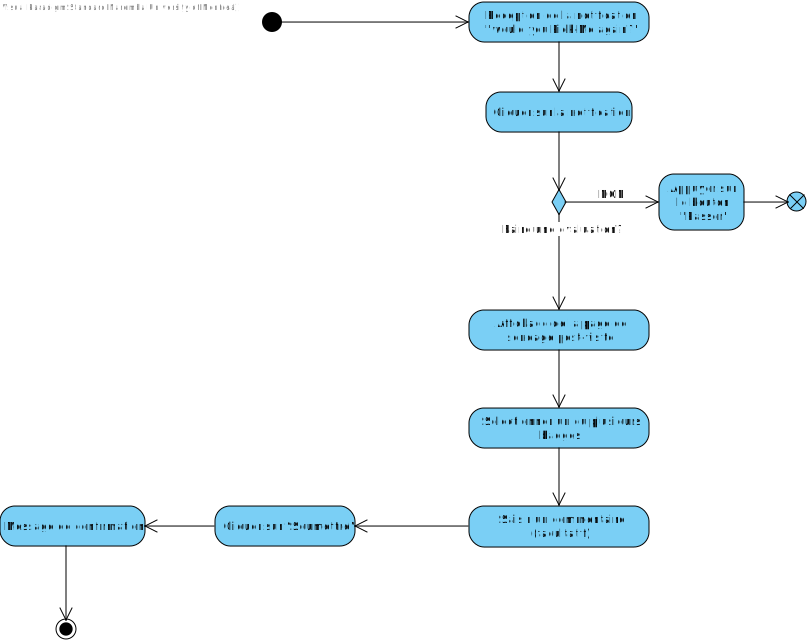
Ce diagramme montre le parcours utilisateur après la visite d’un parc. L’utilisateur reçoit une notification “Would you Pick-Me again ?”, puis sélectionne un ou plusieurs badges et saisit un commentaire facultatif. En cliquant sur “Soumettre”, un message de confirmation est affiché, puis l’utilisateur revient à l’écran précédent.
Diagramme d’architecture¶
Le schéma suivant représente l’architecture logique de l’application Pique-Me. On y retrouve les trois couches principales :
l’interface utilisateur (React Native),
le backend (Node.js + Express),
les sources de données (Firebase et l’API de la Ville de Montréal).
Il illustre les interactions entre chaque composant lors d’une requête typique, comme une réservation ou une recherche de parc.
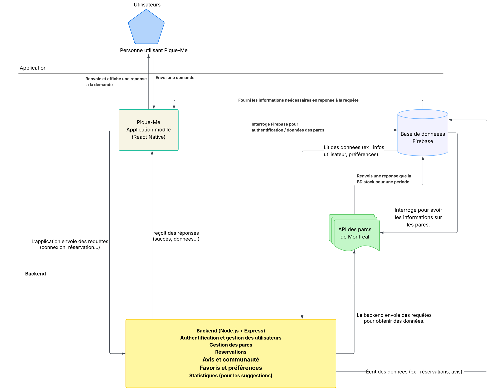
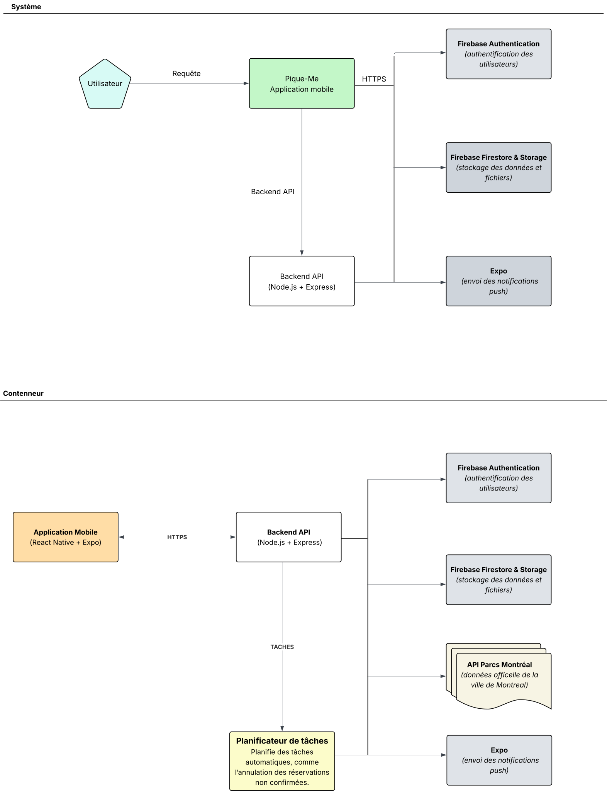
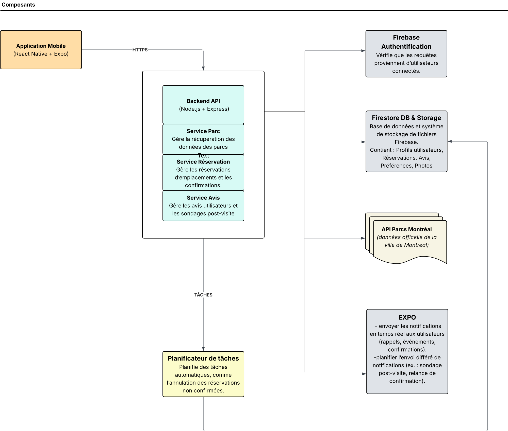
Diagramme UML (représentation des données)¶
Le schéma suivant montre le modèle de données UML utilisé pour l’application Pique-Me. Il présente les éléments importants de l’application, comme les utilisateurs, les parcs, les réservations, les événements, les équipements, les avis et les photos. On y voit aussi comment ces éléments sont liés entre eux.
Par exemple, un utilisateur peut faire des réservations ou laisser des avis sur un parc.
Des types spéciaux comme le statut d’une réservation ou le type de badge sont gérés avec des listes de valeurs (ceux sont des ENUM).
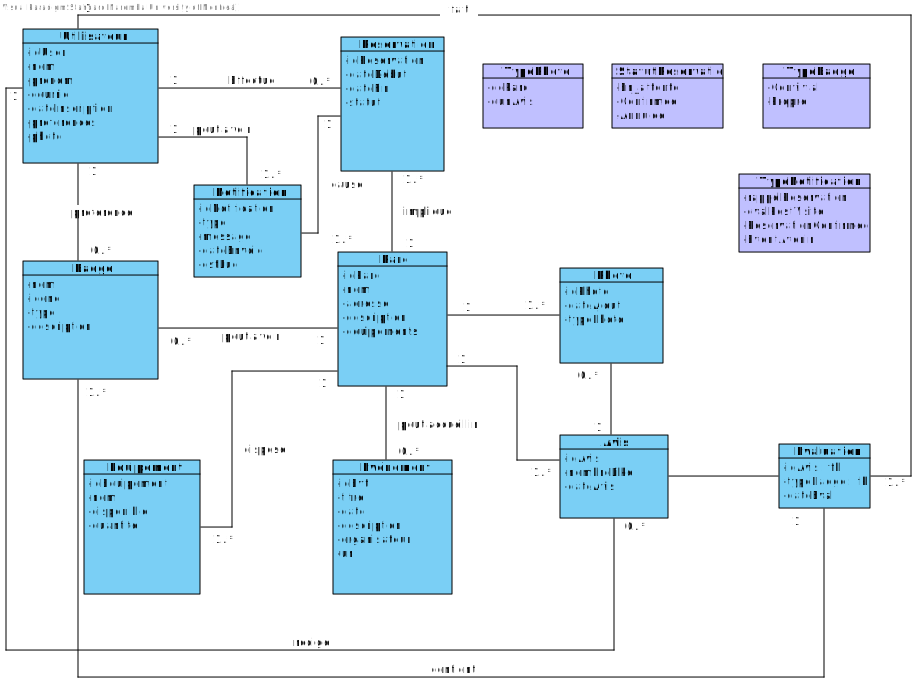
Prototype¶
Lien Figma: https://www.figma.com/design/kP7QEAejfvUB2yia4cleau/Pique-me?node-id=0-1&p=f&t=wV6v3W2tAVDqSN1p-0